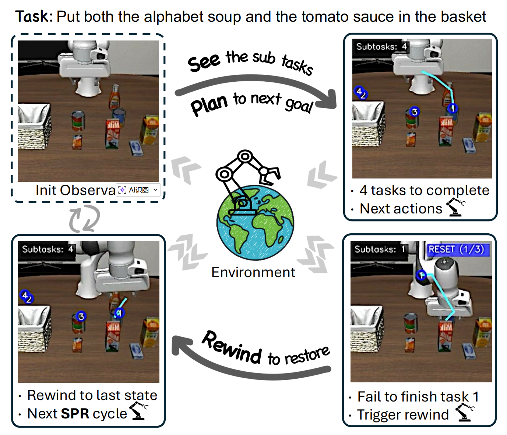
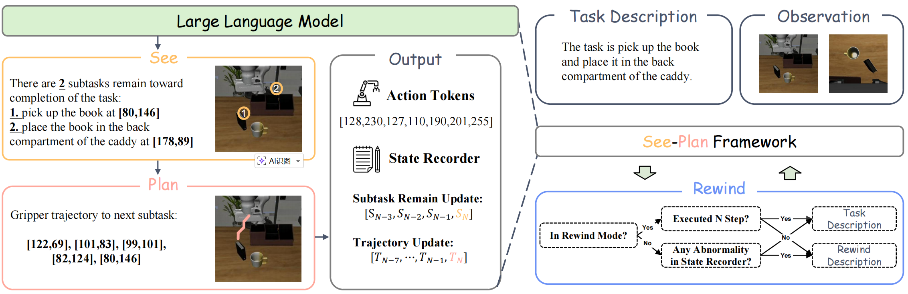
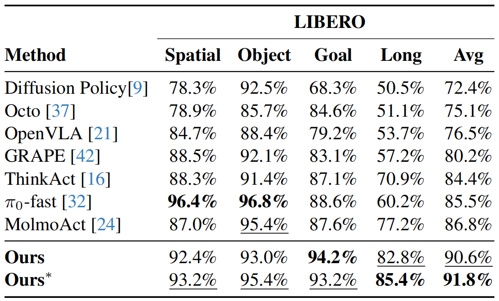
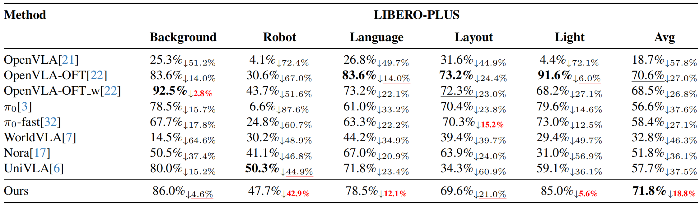

We introduce See, Plan, Rewind (SPR), a progress-aware vision-language-action framework that grounds task progress in concrete 2D spatial subgoals. SPR operates through a continuous cycle: Seeing remaining subtasks with spatial coordinates, Planning trajectories to the next waypoint, and Rewinding to escape erroneous states when progress anomalies are detected. Unlike prior methods relying on abstract progress signals or auxiliary recovery models, SPR achieves fine-grained spatial monitoring and data-efficient error recovery within a single unified model. SPR sets state-of-the-art on LIBERO and LIBERO-Plus benchmarks, and generalizes to challenging real-robot tasks where the baseline fails entirely.

SPR framework overview. Given the task description and observation, the model performs See-Plan reasoning, which identifies remaining subtasks with 2D spatial coordinates (See) and plans a gripper trajectory to the next waypoint (Plan), then outputs action tokens. Each step also updates the state recorder, where \(S_N\) denotes the predicted subtask count and \(T_N\) the planned 2D trajectory. The Rewind mechanism examines the state recorder: if no anomaly is detected, the original task description is retained; if sustained anomalies are identified, the task description is switched to a rewind instruction for \(N\) steps before reverting to normal execution.
Performance on LIBERO. Ours: separately trained on each subset; Ours∗: jointly trained on all four subsets. Bold and underlined values indicate the best and second-best results.

OOD robustness on LIBERO-Plus across five perturbation types; subscripts denote performance drops relative to LIBERO. Bold and underlined values indicate the best and second-best success rates. Red bold and red underlined subscripts indicate the smallest and second-smallest drops.

open the top drawer and put the bowl inside
Dynamic replanning: Recovers from object relocation and environment state changes by updating spatial subtasks.
put the cream cheese in the bowl
Persistent retry: Achieves ultimate success after multiple grasp failures through progress-aware error recovery.
put the white mug on the left plate and put the yellow and white mug on the right plate
Failure recovery: Detects OOD states from failed grasps and resets to familiar configurations for retry.
pick up the book and place it in the back compartment of the caddy
Suboptimal start recovery: Mitigates challenging initial configurations by rewinding to regain spatial freedom and replanning the approach.
for our wine collections organization put this bottle on the third shelf of the rack
Language robustness: Correct task completion despite instruction variations.
put both the alphabet soup and the cream cheese box in the basket
Distractor robustness: Successfully completes the task despite unseen distractor objects in the environment.
@article{SPR,
title={See, Plan, Rewind: Progress-Aware Vision-Language-Action Models for Robust Robotic Manipulation},
author={Dai, Tingjun and Han, Mingfei and Du, Tingwen and Liu, Zhiheng and Li, Zhihui and Khan, Salman and Yu, Jun and Chang, Xiaojun},
journal={arXiv preprint arXiv:XXXX.XXXXX},
year={2026}
}